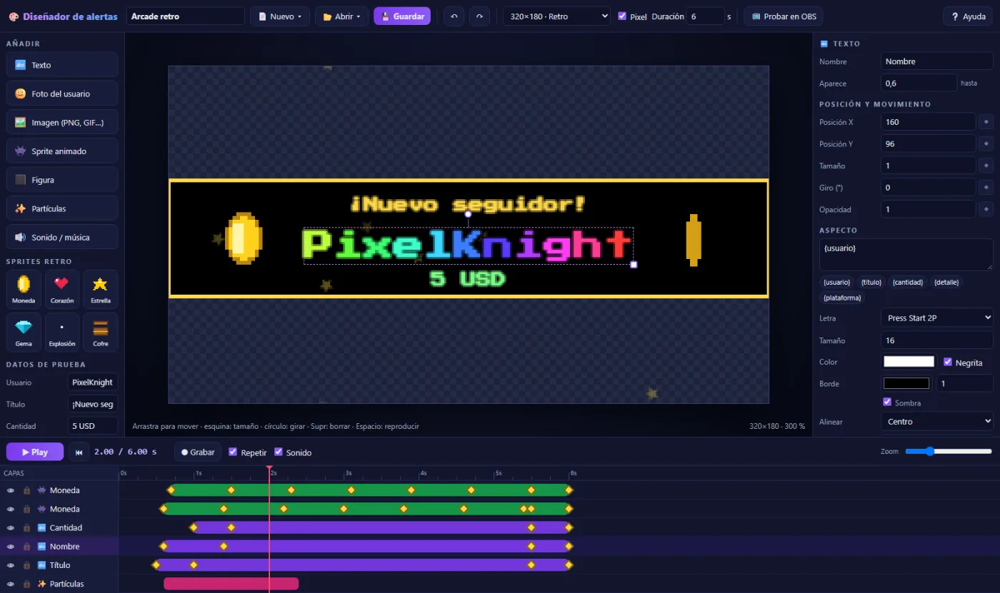
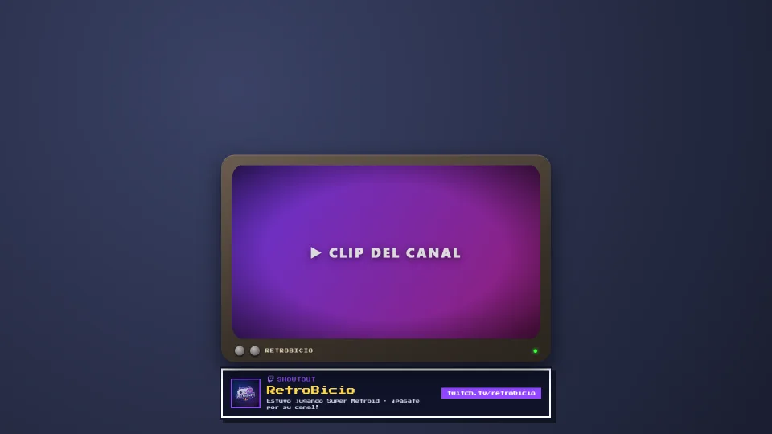
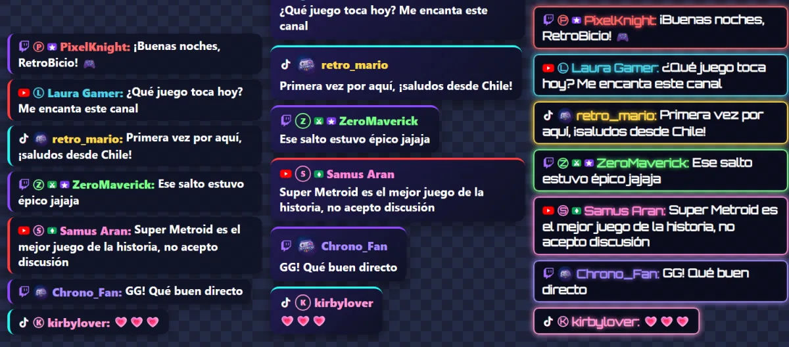
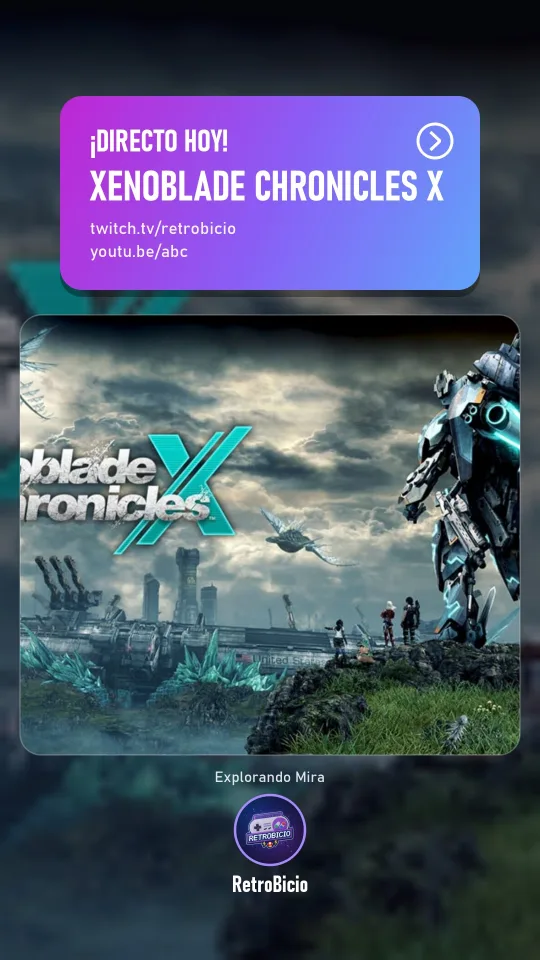

El chat de Twitch, YouTube y TikTok en una sola ventana, leído en voz alta. Alertas retro que puedes diseñar tú, shoutouts con clip y BicioBot, un copresentador con inteligencia artificial.

Deja de abrir diez pestañas. RetroBicio junta tu chat, tus alertas, tus overlays y tu comunidad en un solo programa.
Twitch, YouTube y TikTok juntos, con fotos, insignias y emotes. Responde a todos desde un solo sitio.
Tu chat en voz alta, con voces de Windows o de personajes. Tus espectadores eligen voz con un comando.
Copresentador que habla contigo, ve tu juego, saluda, comenta las alertas y resume el directo.
Seguidores, subs, bits, Super Chats, regalos, raids y Ko-fi, con estilos de Mega Man X, Zelda, FF6, Kirby y más.
Crea las tuyas con línea de tiempo, sprites, partículas y sonido. Sin programar nada.
!so @canal y aparece su clip con uno de 6 temas: tele CRT, neón, carta holográfica…
Tu chat en OBS, vertical u horizontal, con 6 estilos, 10 efectos de entrada y la letra que quieras.
Al empezar el directo avisa en Discord, X e Instagram con una historia hecha con el arte de tu juego.
Puntos por ver el directo, recompensas de Twitch, ruleta en pantalla y créditos finales animados.
Cada clip se convierte en un vídeo vertical listo para TikTok, Reels y YouTube Shorts.
Donaciones, membresías y compras de Ko-fi con su alerta, agradecimiento por voz y puntos.
Copias de seguridad automáticas, actualizaciones sin perder tu configuración y claves guardadas en Windows.
Arrastra, anima y listo. Lo que ves en el diseñador es exactamente lo que sale en OBS.
Escribe !so @canal y RetroBicio busca su mejor clip, lo muestra en OBS, lo menciona en el chat y lo anuncia por voz. Y si te hacen raid, lo hace solo.

Pega un enlace en OBS y personaliza todo en directo: los cambios se ven al momento.

Cuando empiezas a transmitir, RetroBicio publica el aviso en Discord, X e Instagram con tus enlaces.

BicioBot charla con tu comunidad, comenta lo que pasa en tu juego, agradece cada alerta con su propia voz y al terminar te deja un informe con ideas para crecer.
Sin registrarte en ningún sitio ni pegar claves raras: un asistente te acompaña.
Descomprime el .zip y abre RetroBicio.exe. No hace falta instalar nada.
El asistente te guía para conectar Twitch, YouTube y TikTok con sus páginas oficiales.
Copia los enlaces del chat, las alertas y los shoutouts en fuentes «Navegador». ¡A transmitir!
Gratis para Windows 10 y 11. Se actualiza solo y nunca pierde tu configuración.
⬇ Descargar RetroBicio (.zip)Si Windows muestra «Windows protegió tu PC», pulsa Más información → Ejecutar de todas formas.
Es gratis y lo seguirá siendo. Si quieres apoyar el proyecto, invítame a un café.
Sí. RetroBicio es gratuito y sin publicidad. Las voces, la IA y BicioBot funcionan con el servidor de RetroBicio sin que tengas que registrar nada.
Sí. El chat, las alertas, los shoutouts, la ruleta y los créditos son enlaces que se añaden como fuente «Navegador».
No. RetroBicio es ligero; lo más pesado (voces e IA) se hace en internet.
No. Las actualizaciones reemplazan solo el programa. Además, se hacen copias de seguridad automáticas cada día.
Cuando conectas YouTube, la aplicación te pide iniciar sesión con Google en tu navegador. Con tu autorización, RetroBicio Stream Control consulta el nombre, la foto y el número de suscriptores de tu canal, lee el chat de tu directo, sus Super Chats y miembros, y envía al chat los mensajes que tú escribes o que BicioBot publica en tu nombre. RetroBicio nunca ve tu contraseña de Google.
Más detalles en la Política de Privacidad y las Condiciones del Servicio.